拥有自己的个人Blog可以把自己学到的技术，想法、经历分享出来，也可以用来写日记。远比QQ空间有意思多了，尤其是对于程序员来说，可以随意折腾。Jekyll就是一款生成静态页面(HTML文件)的工具，Jekyll是用Ruby编写的。但使用者不需要掌握Ruby，只需要在控制台(terminal)中输入几条简单的命令就能搭建出一个Blog来，但如果你还懂得网站前端的知识如HTML，CSS，Javascript的话，你就能完全自定义你自己的Blog。
现在先把Jekyll的运行环境搭建好。因为Jekyll是Ruby编写的，所以必须先安装Ruby的运行环境。
安装Ruby和Jekyll
Windows平台
在rubyinstaller网站下载最新的版本即可，根据自己系统的情况选择32位或是64位。安装时注意选择Add Ruby executable to your PATH。
Linux平台在命令行中运行
1 | $ sudo apt-get install ruby |
安装完成后打开命令行输入ruby -v，能输出ruby版本就说明安装成功。
除了Ruby以外Windows系统还需要Ruby DevKit
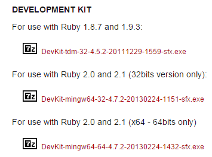
根据自己所安装的Ruby的版本选择相应的版本。下载之后运行，解压到一个你喜欢的目录。目录必须不包含空格
解压完成之后打开命令行，将路径切换到RubyDevKit的目录。如：
1 | cd E:\RubyDevKit |
运行
1 | ruby dk.rb init |
，这条命令会自动检测Ruby的安装路径，并添加到配置文件中。
运行
1 | ruby dk.rb install |
，将DevKit安装到Ruby中。至此，Ruby的运行环境总算的搭建好了，接下来使用gem安装Jekyll。
为了使下载速度更快，我们将下载源替换为淘宝的RubyGems 镜像。在命令行中运行
1 | $ gem sources --remove https://rubygems.org/ $ gem sources -a https://ruby.taobao.org/ $ gem sources -l *** CURRENT SOURCES *** https://ruby.taobao.org # 请确保只有 ruby.taobao.org |
然后在命令行中运行：
1 | gem install jekyll --platform=ruby #Linux 中只需 gem install jekyll |
经过漫长的等待之后安装完成，在命令行中运行jekyll -h将会显示如下命令(Windows环境下,Linux环境下的命令大同小异)：
1 | C:\Users\Administrator>jekyll -h |
接下来新建一个自己的Blog，运行下面命令：
1 | jekyll new MyBlog #在当前目录新建一个名为“MyBlog”的站点 cd MyBlog && jekyll serve #切换到MyBlog目录，并启动jekyll的本地服务器 |
打开你的浏览器，在地址中输入http://127.0.0.1:4000/就能看到如下页面：
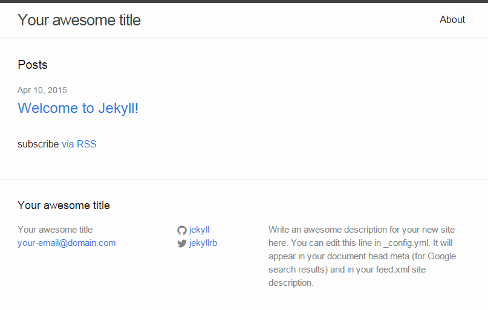
到此为止一个你的Blog站点就搭建好了，其中_site是最终生成的网站代码，别的文件夹中都是网站的源代码。接下来我们要把这个站点发布到网上去。在这里我选择的是Github，Github只支持静态页面的解析，所以需要生成静态站点的工具。与之类似的还有国内的Git@OSC使用方法与Github类似。但与Github不同的是Git@OSC支持后台语言编写的网站如PHP、Node.js、Java等，还可使用数据库但本人还没测试过。有兴趣的同学可以试试。
Github 代码托管网站
Github是一个基于git版本控制工具的代码托管网站。
以下是Github网站的官方介绍
GitHub is the best place to share code with friends, co-workers, classmates, and complete strangers. Over eight million people use GitHub to build amazing things together.
简单来说就是一个存放代码的地方，代码按仓库(repository)管理，仓库又分为私人仓库(private repository)和公共仓库(public repository)。私人仓库需要收费，而公共仓库免费，并且不限制数量。而Github最棒的地方就是多人协作。也就是开源程序，人人都能为代码提交修改。像Linux内核、Node.js 这些著名的程序都在Github上托管包括Jekyll。而且在Github上还能找到很多有意思的项目。所以先注册一个Github帐号吧。
完成了帐号注册后就能创建仓库了
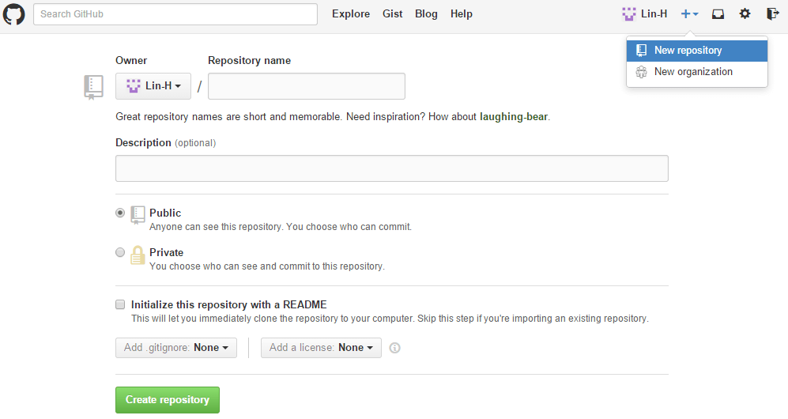
创建的仓库名称必须是username.github.io，其中username就是你的用户名。Description可填可不填。 创建完成之后，就可以把代码上传上去了，这时就需要使用git工具了
git 版本控制工具
可以在这里下载。所谓版本控制系统也就是存放有每个版本的代码。每次修改后的代码commit后会自动记录为一个版本。使用版本控制的好处就是任何时候都可以把修改错误的代码恢复至任一个版本。避免了代码保存了之后无法恢复。
下载安装git并添加到PATH中之后，打开命令行，切换到我们之前新建的MyBlog目录中并运行git init .将当前目录初始化成一个git仓库其中.代表当前目录。
1 | E:\Project\MyBlog>git init . |
可以看到新建的是一个空的仓库，运行命令git status(下面的所有命令都是在MyBlog目录中运行)查看当前仓库的状态。
1 | E:\Project\MyBlog>git status |
可以看到仓库检测到了变动，Untracked files为没有被记录的文件。运行命令git add -A记录所有发生变动的文件。然后再运行一次git status
1 | E:\Project\MyBlog>git status |
看到输出的第5行Changes to be committed表明这些文件可以被commit了，一旦commit后文件的修改就会被记录到仓库中，并自动生成一个新版本。运行git commit -m "add all the file to repository"。其中commit命令必须有-m参数并跟着一个字符串，用于说明该commit做了什么变动，字符串可以是中文。
1 | E:\Project\MyBlog>git commit -m "add all the file to repository" |
这样所有的变动都记录到仓库中了: )。注意[master (root-commit) e0954d0]每一次commit都会生成一个序号类似e0954d0，就像版本号的ID，若要恢复到以前的版本就需要使用这个序号。
做好了git仓库就可以把它上传到Github上发布到网上了。
上传到Github
首先需要设置远程仓库的地址(即在你的Github账号中创建的仓库的地址)。在网页上打开你之前创建的仓库。在页面右侧找到该仓库的URL(建议先点击SSH切换到SSH链接，方便以后添加SSH KEY)
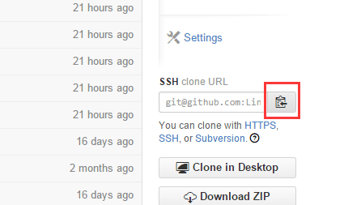
在命令行中运行git remote add origin <server>其中
注意：Github解析静态页面所使用的就是Jekyll所以你可以直接上传网站的源代码到远程仓库的master分支中，或将源代码上传到其他分支如source中，把最终生成的网站代码(_site文件夹中的内容)上传到master分支中。分开两个分支的好处是你可以现在本地使用Jekyll插件，Jekyll插件包括自动归档，分类等等功能，然后将生成的网站上传到master分支。因为Github出于安全考虑禁止使用插件。接下去的教程将代码上传至两个分支。
将网站源代码和生成的代码上传到两个分支。需要现在命令行中将当前目录切换至MyBlog中的_site文件夹中。重复上面的git命令将_site文件夹变成另一个git仓库，并添加远程仓库(为同一个远程仓库地址)。在命令行中运行
1 | git push origin master #master 即为上传分支的名字，若远程仓库中还没有该分支，则会被创建 |
同样的在MyBlog目录中运行
1 | git push origin source #将源代码上传到source分支，便于分开管理 |
最后在Github网站上打开你的远程仓库，应该可以看到两个分支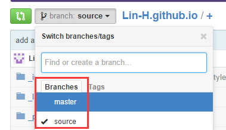这时你打开http://username.github.io就能看到你的网站(username为你的用户名)已经发布到网上了: )
目录结构
为了能够更好地使用Jekyll，现在来了解一下生成的网站的目录结构。
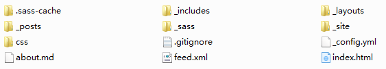
你的网站目录结构应该像上图那样。.sass-cache目录是编译sass时的缓存，我们不需要理会它。_includes目录包含着整个网站的结构，进入这个目录可以看到有3个文件
1 | footer.html |
footer.html是网站的底部内容

head.html则是网页结构中的头部，用于对该页面进行说明，和导入静态文件如css、js等，这一部分并不会在网页上显示出来。header.html文件中的内容就是网页的标题栏部分。
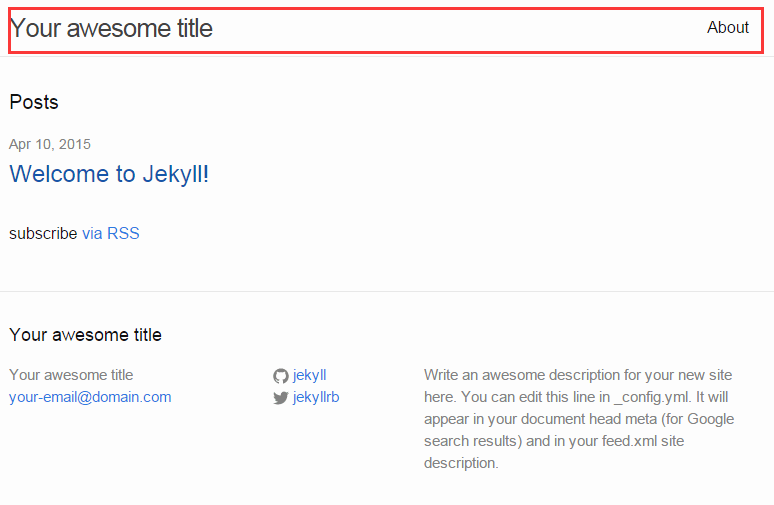
这个文件夹的内容相当于是构成网页的基本骨架。Jekyll中默认有两种页面布局，一种是page、一种是post，存放在_layouts目录中，都是用同一种布局(layout)default，就是目录中的default.html文件。我们写文章就是使用post布局，所以一般情况来说这些文件都不需要改动，除非你想增加别的内容进去。
目录_sass和css都是网站所使用的样式表默认情况下，这两个目录中的文件都使用sass编写，sass是一种用来快速编写css的工具相当于另一种css语言，详细介绍可以在sass官网查看。当然如果你不会sass也可以直接用css编写，编辑的方式，直接用文本编辑器打开.scss文件就可以了，属于css的语句sass的编译器不会处理。
_config.yml文件比较重要，它是整个网站的配置文件，可以设置网站的标题，描述，网址和其他与jekyll相关的网站参数，详情请看这里
_posts目录就是我们写文章的地方啦。写文章的时候一般都会用Markdown语法。Markdown其实就是以一种简易的方式去写HTML，学习起来相当容易。Github的简易Markdown教程
Jekyll主题风格和配色
既然是个人Blog，那么当然应该更具个人特色，如果你是个懂设计的程序员，制作一个漂亮的网站自然不难。但对于像我这样还不懂设计的人来说只能是到处改改，边改边瞧了。除此之外，也可以直接使用别人已经写好的主题风格。提供两个可以免费下载Jekyll主题的网站
要使用某个主题只需要把该主题下载下来，直接复制到你的网站站点即可，然后把你的_posts目录下的文章复制到同名目录即可。然后在网站当前目录下打开命令行运行jekyll serve就能看到你新换的主题了。
代码配色
Jekyll默认的代码高亮工具是Pygment，对于在Windows环境下不是很稳定，所以推荐使用Rouge。跟安装Jekyll一样，使用gem来下载安装Rouge，在命令行中输入
1 | gem install rouge |
安装完成后打开编辑你的Blog根目录下的_config.yml文件，在文件的最后新增一行加上
1 | highlighter: rouge |
将代码高亮工具设置为Rouge。这样就完成了。
如果不喜欢Rouge的默认代码配色可以在[这里](/download/codeHighlightStyle.zip)下载我事先从Rouge中导出的其他代码配色方案。并将文件复制到_sass文件夹中，编辑css文件夹中的main.scss文件，在末尾import你刚添加的配色方案的文件名。比如：
1 | @import |
下面是部分配色方案的截图
base16.solarized.dark
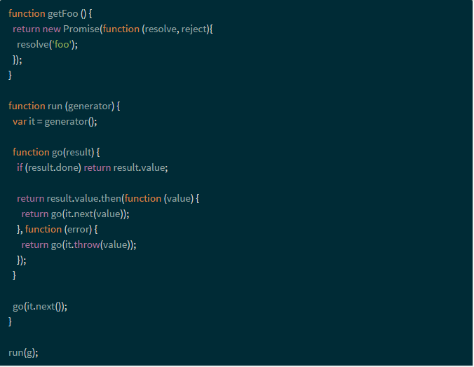
base16.solarized

colorful
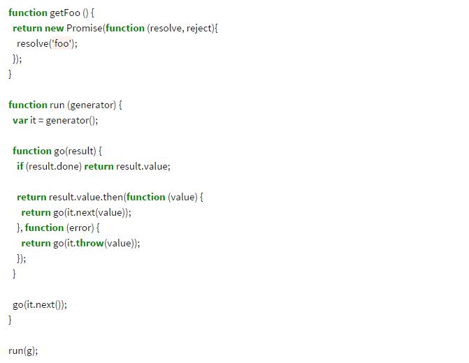
default
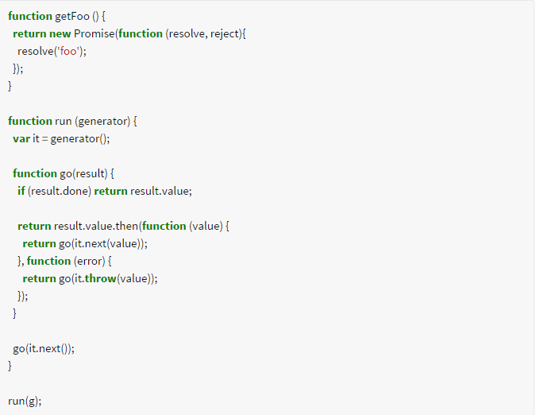
manni
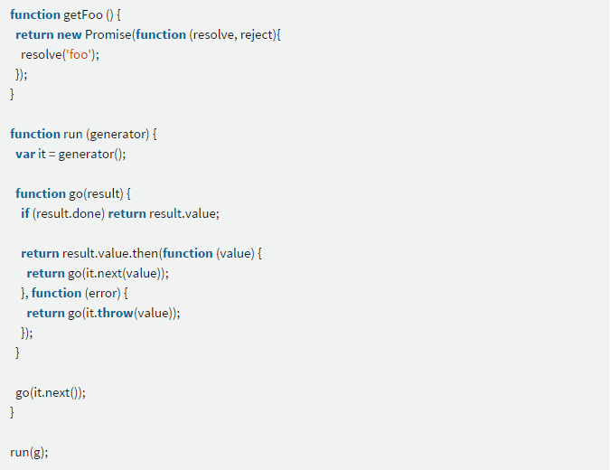
monokai.sublime
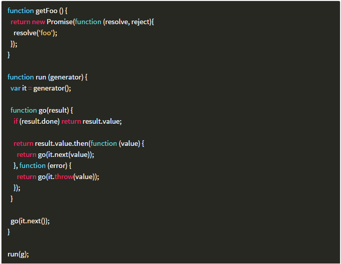
native
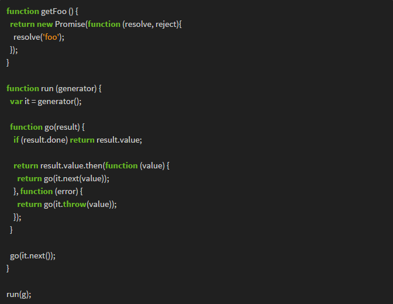
perldoc
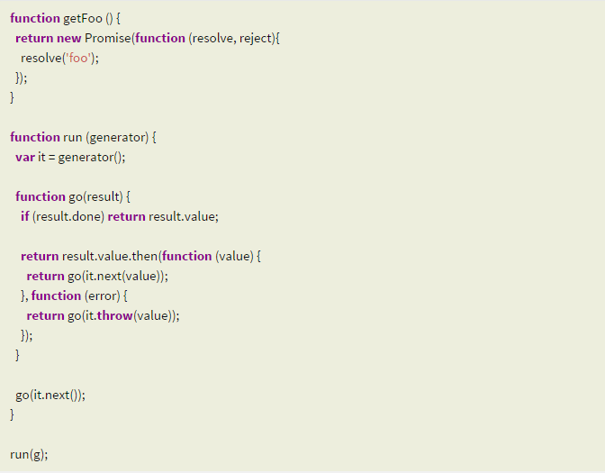
thankful_eyes
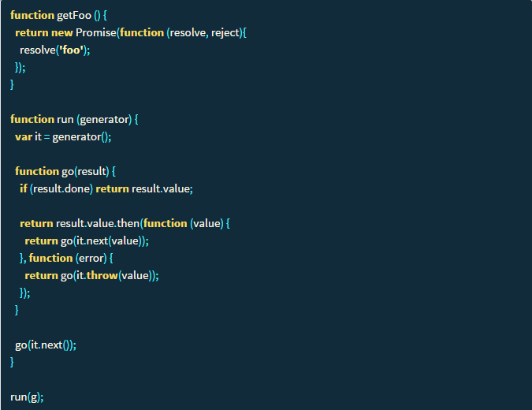
vim
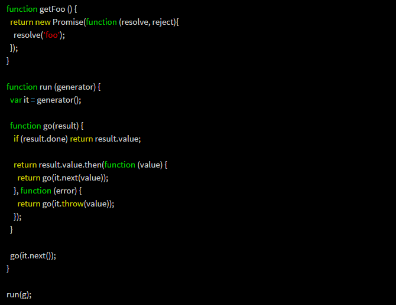
书写文章
书写文章其实非常简单，在你已经建好的Blog中，_posts 文件夹内就默认有一篇文章。文章的命名是有讲究的，以“年-月-日”开头，并用“-”分开，后面再加上标题。打开后可以看到编写文章的相关格式。开头部分是文章的相关设置，可以设置该篇文章使用什么布局，标题，创建时间和分类。接下去就是文章的主要内容，使用markdown来编写，在编写文章的时候可以使用
1 | jekyll serve |
来一遍写，一遍观察实际效果。一旦编写完成后就push到远程仓库中就算发布了。